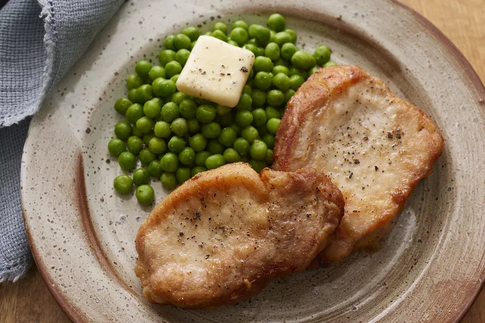

Pork Lo Mein

Pork Lo Mein
This pork lo mein recipe was inspired by another recipe, but I added more vegetables, ginger, and sesame oil. Add or remove veggies as you see fit.
Ingredients
- ⅓ cup low-sodium soy sauce
- 2 cups snap peas
- 1 (12 ounce) pork tenderloin, cut into thin strips
- 1 (8 ounce) package sliced white mushrooms
Steps
- 1 (8 ounce) package linguine
- ⅓ cup low-sodium soy sauce
- 2 tablespoons rice vinegar
- 2 teaspoons cornstarch
- ½ teaspoon sesame oil